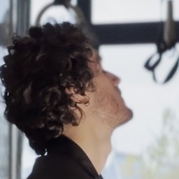

VladLecții de pian · București
Pe Bach îl poate cânta oricine. Pe tine, doar tu.
Salut, sunt Vlad și dau lecții de pian. Te învăț partituri, te învăț și niște Bach. Dar mai presus de toate, te învăț să cânți ce simți, ce gândești și cine ești. Un univers numai al tău.
Hai să-l construim împreună.
Melodia asta n-a mai cântat-o nimeni până acum. E a ta.
0750 199 672 vlad@pianul.ro
Atinge clapele și cântă ce simți.